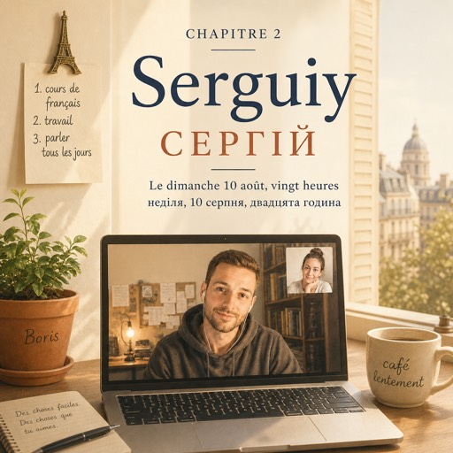

Le dimanche 10 août, vingt heures — неділя, 10 серпня, двадцята година
Le dimanche soir, à huit heures, Natalia appelle Serguiy.
У неділю ввечері, о восьмій, Наталя дзвонить Сергієві.
C'est toujours le dimanche. C'est toujours à huit heures.
Завжди в неділю. Завжди о восьмій.
C'est comme ça depuis trois ans.
Так уже три роки.
Sur l'écran, il y a le visage de Serguiy.
На екрані — обличчя Сергія.
Derrière lui, la chambre est sombre.
За ним темна кімната.
Il n'allume pas la lumière. Il n'allume jamais la lumière.
Він не вмикає світло. Він ніколи не вмикає світло.
— Salut, dit Natalia. Ça va ?
— Привіт, каже Наталя. Як ти?
— Ça va, dit Serguiy.
— Нормально, каже Сергій.
Ça veut dire non.
Це означає «ні».
Serguiy habite à Cracovie. Il travaille beaucoup.
Сергій живе в Кракові. Багато працює.
Il ne connaît pas beaucoup de gens.
Знайомих у нього небагато.
Le soir, il rentre, il mange, il ouvre son ordinateur, et voilà.
Увечері він приходить, їсть, відкриває ноутбук — і все.
— Tu sors un peu ? demande Natalia.
— Ти хоч кудись виходиш? питає Наталя.
— Le week-end, oui. Un peu.
— На вихідних, так. Трохи.
Elle sait que ce n'est pas vrai.
Вона знає, що це неправда.
— Et toi ? demande Serguiy.
— А ти? питає Сергій.
— Moi, j'ai un plan.
— А в мене план.
Elle prend la feuille et elle la montre à l'écran : cours de français, travail, parler tous les jours.
Вона бере аркуш і показує його в екран: курси французької, робота, говорити щодня.
Alors quelque chose change.
І тут щось міняється.
Serguiy se lève. Il allume la lumière. Il parle vite.
Сергій встає. Вмикає світло. Говорить швидко.
— Écoute-moi bien. Les règles, ce n'est pas la langue.
— Слухай уважно. Правила — це не мова.
— Tu peux apprendre cent règles et ne pas comprendre un serveur.
— Можна вивчити сто правил і не зрозуміти офіціанта.
Il faut écouter et lire. Beaucoup. Tous les jours.
Треба слухати і читати. Багато. Щодня.
Des choses faciles. Des choses que tu aimes.
Щось легке. Щось, що тобі подобається.
— Et la grammaire ?
— А граматика?
— La grammaire, elle vient toute seule. Après.
— Граматика прийде сама. Потім.
Il parle vingt minutes.
Він говорить двадцять хвилин.
Il parle de son application, de ses idées, de ses recherches.
Говорить про свій застосунок, про свої ідеї, про свої дослідження.
Natalia ne comprend pas tout.
Наталя розуміє не все.
Mais elle aime bien quand il est comme ça.
Але їй подобається, коли він такий.
— Tu devrais trouver une copine.
— Тобі варто знайти дівчину.
— Quoi ? C'est vrai !
— Що? Це ж правда!
Il ouvre la bouche. Il la referme. Et il rit.
Він відкриває рота. Закриває. І сміється.
C'est un petit rire. Mais c'est un vrai.
Сміх тихий. Але справжній.
À neuf heures, ils disent au revoir.
О дев'ятій вони прощаються.
Dans la chambre de Serguiy, la lumière est encore allumée.
У кімнаті Сергія світло ще горить.